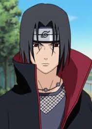

|
|
|
|
> Uchiha Itachi: Kim

Itachi, genç yaşında bile çok zeki ve yetenekli biriydi.
Öğretmen tarzı kişilerden çok yardım almamış olsa da, çok
büyük gelişmeler kaydetmiştir. Serinin tamamı boyunca çok
az dövüştüğü gözlenen Itachi'nin, çok güçlü olan ninjaları
zorlanmadan yenmesi, kendisinin inanılmaz güçlü biri olduğuna
kanıttır. Yetenekleri ile gurur duyan Hoshigaki Kisame bile,
Itachi'nin kendinden güçlü olduğunu kabul etmiştir. Öyle ki
Madara bile Itachi'nin gücünden çekinmekteydi. Tüm bunlara
rağmen, Itachi gücünün sınırlarını bilen biridir. Bu yüzden
Jiraiya ile dövüşmekten kaçınmıştır. vatanını seven biri olduğu
için, Konoha'yı koruyan en güçlü savaşçı olan Jiraiya'nın zarar
görmesini de istememiştir. Itachi'nin tek eksiği çakrasının az
olmasıdır. Ölümcül hastalığına, düşük seviye çakrasına ve büyük
ölme isteğine rağmen, Sasuke yine de Itachi'yi yenememiştir. Sasuke,
Itachi'yi yendi diyenler, açıp bir daha izledikleri zaman, Itachi'nin
kendi kendine öldüğünü görebilirler. Itachi, Üçüncü Ninja Dünya
Savaşı'na katılmamış olsa da, psikolojik açıdan çok etkilenmiştir.
Bu yüzden düşmanlarını olabildiğince öldürmemeye çalışır.
|